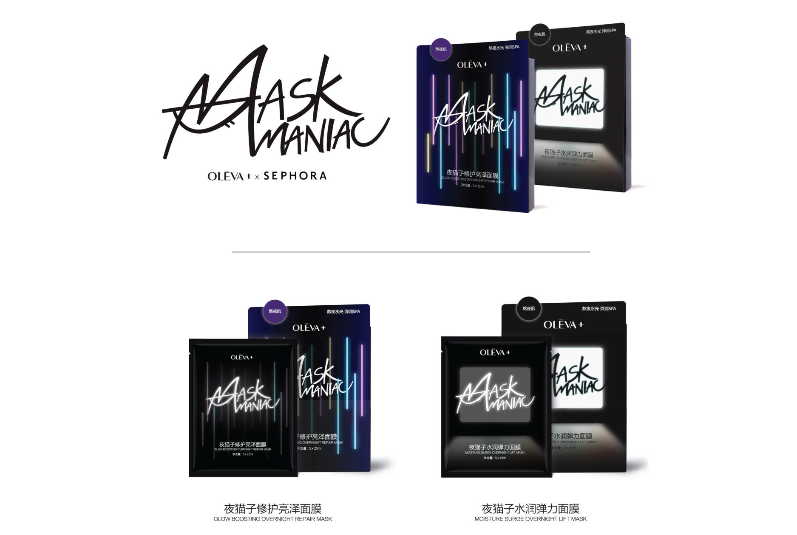
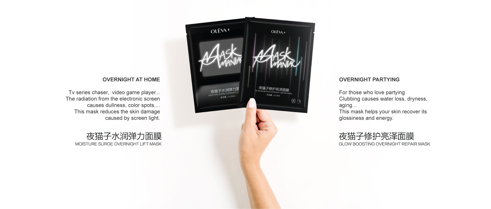
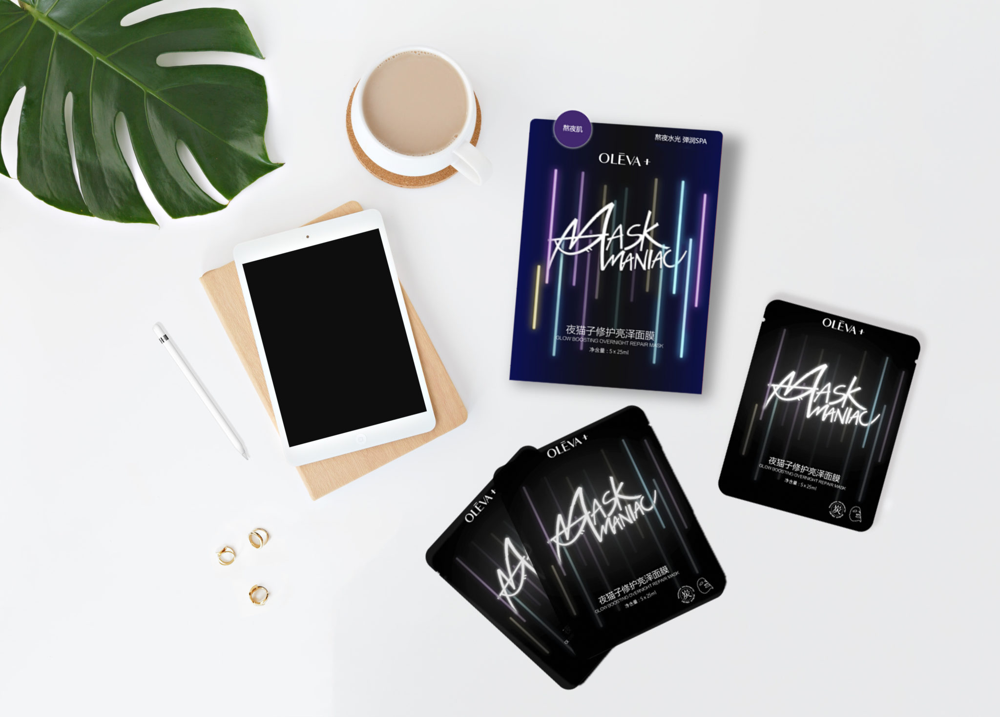

MaskManiac
WHEN? Spring 2018
WHO? Tomás Cabezón
WHY? Professional project
WHERE? 西睿羿设计 2G Design Agency

This packaging concept was designed during my internship at 2G Design Agency in Shanghai. The client is the Chinese cosmetic brand “Oleva+”. The project was to design the packaging and visual image of their new product that was going to be sold exclusively in the Sephora stores in China.
This mask is created for those overnight maniacs. Actually there were to different mask types depending on the overnight activity:


Other proposed designs:
I have chosen this project among the ones I took part during my internship in 2G Design Agency because it is the most especial one for me. I was able to participate and had complete creative independence in all the parts of the design process. I pitched in from the concept brainstormings, to the proposal design, being part of the client meetings.